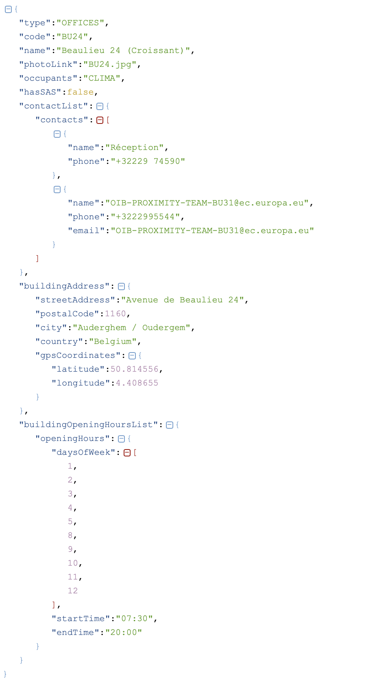

Wikibase:
The EU Knowledge Graph
26.06.2020
@EU (online)

Outline
What is Wikibase?
Wikimedia hosts many wikis ....

Wikidata is one of them!
Wikibase is the software behind Wikidata
The EU Knowledge Graph
A data repository to store structured data about the European Commission
Available at https://linkedopendata.eu/
Why using Wikibase?
User Friendly
Graph structure
Can be queried
Can be edited by humans and by bots
Scales
Wikibase hosts Wikidata, one of the largest existing KGs containing 5 Billion triples.
Multilingual
Full track of changes!
Current content ...
European institutions
European countries
Capitals
Head of States
DGs
Buildings
705.095 projects financed by the European Union
Importing data ...
1. Take any structured data
2. Model the data
- Need entities like building, office
- Need properties like address, open hour, occupant
- Whenever possible take wikidata entities/properties or existing entities/properties
3. Keep identifiers
Use other identifiers so that one can use them to link to other resources!
4. Import using Wikibase APIs
We always used Pywikibot ....
But there are alternatives ....
The imported data is easy to understand, aligned with existing concepts, queriable and easy to reuse ....
Keeping data fresh ...
1. Entities imported from Wikidata
2. Entities imported from other sources
Use the identifier to find the entity in the KG.
Check what has changed and make an update.
Services around ...
1. Data exports
Available at https://data.linkedopendata.eu
2. Query Service
Available at https://query.linkedopendata.eu
3. Question Answering
We allow to query and explore the KG using natural language
Available at https://qa.linkedopendata.eu
Kohesio:
making projects financed by the European Commission accessible to citizens
EU Cohesion Policy
- EU Cohesion Policy supports every year tens of thousands of projects across Europe
- EU Cohesion Policy makes up approximately 32.5 % of the EU budget 2014-2020 (equivalent to ca. EUR 351.8 billion)
What is Kohesio?
- The money is given to the 27 member states which have to implement the projects
- The member states report back to the European Commission how the money was spent.
- The objective of Kohesio is to aggregate this data and make it accessible to citizens.
Data
- Around 20 files in csv, xlsx or xls describing the projects of 6 pilot countries
- Around 15 files in csv, xlsx or xls describing vocabulary of the Cohesion Policy: categories of interventions, policy objectives, ....
- Data about geographic entities (NUTS)
- Wikidata
Enrich the data
- Translate the project descriptions to English
- Compute geo coordiantes for every project
- Compute in which region the project is contained
- Link the NUTS with information from Wikidata
- Link the beneficiaries to entities in Wikidata
Build a website for citizens on top
Available at https://kohesio.eu
To summarize
- We integrated structure data from different sources in one uniform model
- The data is enriched increasing it's value
- The data is accessible by citizens
Conclusion
We have shown:
- how Wikibase is used as an infrastructure in the EU Knwoledge Graph (KG)
- what is the content of the EU KG, how the data is ingested, maintained fresh and which services are offered.
- a concrete use case: Kohesio
Acknowledgmentes:
- Doris Team @ DG Connect
- Knowledge Management @ DG Regio
Thank you! Questions?